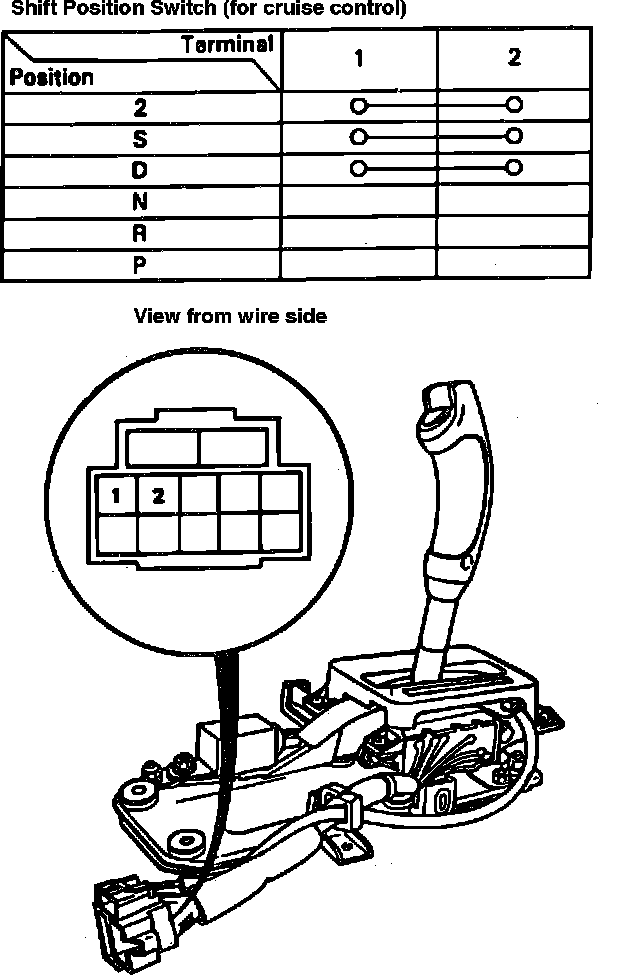
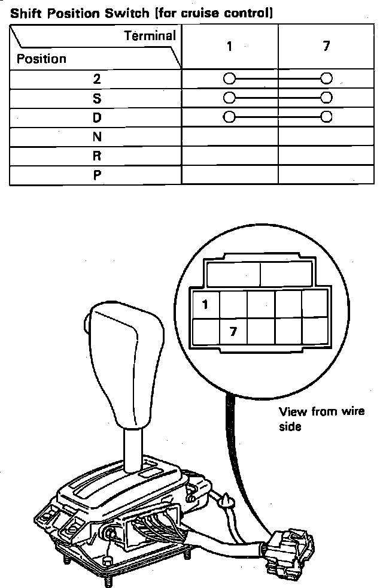

Shift Position Console Switch
Fig. 20 Shift Position Console Switch:

Fig. 21 Shift Position Console Switch:

1. Remove front console and center instrument panel. Disconnect console switch connector.
2. Check for continuity between terminals in each switch position as shown in Figs. 20 and 21.
3. Move lever back and forth not touching push knob at each position and check continuity within range of freeplay of shift lever. If no continuity within freeplay, adjust installation position of console switch.
4. Shift to ``P'' position and loosen two bolts retaining switch. Slide switch in direction of ``D'' position or until there is continuity between terminals 1 and 7.
5. Recheck for continuity between each of the terminals. If adjustment is not possible, check for damage in shift detent. If there is damage, replace console switch.